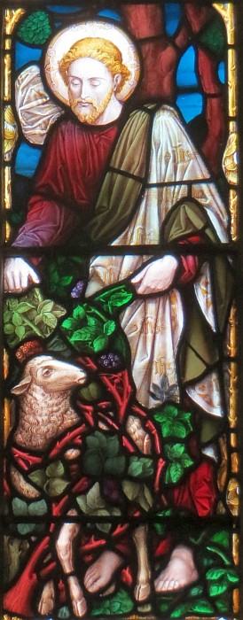

La Bouonne Nouvelle s'lon Luc, Chapitre 15

Vèrsets 3-6
Et i' lus prêchit ainchîn chutte pathabole-chîn: "Létché d'vous tch'avait eune chentaine dé brébis, s'il en pèrdait ieune, né laîss'sait pon driéthe les nénante-neu dans lé d'sèrt à seule fîn d'aller qu'si l'êdgéthée jusqu'à ch'qu'i' la trouv'thait? Et quand i' l'éthait r'trouvé, i' la portéthait à haute dgèrre et dans un guédon d'jouaie. Quand i' r'tait siez li, il enviêthait qu'si ses anmîns et vaîthîns et lus dithait, "Rêjouiss'-ous acanté mé car j'r'ai ma brébis êdgéthée."
Vèrsets 1-7
Touos les tcheûteurs d'taxe et les gens d'mauvaise vie lus appréchîdrent dé li pouor l'ouï. Et les Pharisiens et l's êcrivains en gronnaient et dîdrent, "Ch't'î-chîn atchil'ye les gens d'mauvaise vie et mange auve ieux!"
Mais i' lus racontit chutte pathabole, "Tchi qu'est l'chein d'entré vous tchi, s'il avait chent brébis, en pèrdant ieune né laîss'sait pon les nénante-neu au d'sèrt et n'îthait pon souotre la cheinne à banon jusqu'à ch'qu'il étha r'trouvé? Et un co qu'i' l'étha r'trouvé, n'l'êpaûl'lait pon jouaiyeusement? Épis un co r'vénu siez li, n'appel'lait pon ses anmîns et ses vaîthîns et n'lus dîthait pon, 'Rêjouiss'-ous auve mé; ch'est en tchi j'ai r'trouvé ma brébis tchi 'tait à banon!'? J'vos l'dis, qu'i' y'étha d'même d'la jouaie ès cieux pouor un seul pécheur v'nant à s'amender, pus qu'pouor nénante-neu justes tchi n'ont pon à lus r'penti."
Viyiz étout:
- La Bibl'ye
- La Bouonne Nouvelle s'lon Saint Luc, chapitre iun, vèrsets 1-4
- La Bouonne Nouvelle s'lon Luc, Chapitre 1, vèrsets v-xxv
- L'Êvangile sélon Saint Luc, chapitre iun, vèrsets 26-38
- L'Êvangile sélon St.-Luc: chapitre 1 versêts xxvi à xxxviii - eune aut' vèrsion
- L'Êvangile sélon Saint Luc, chapitre iun, vèrsets 26-38 - eune aut' vèrsion
- La Bouonne Nouvelle s'lon Luc, Chapitre 1, vèrsets 39-56
- L'Êvangile sélon St.-Luc: chapitre 2 versêts i à vii
- L'Êvangile sélon St.-Luc, Chapitre deux, Vèrsets 1 à 7- eune aut' vèrsion
- L'Êvangile sélon Saint Luc, chapitre 2, vèrsets viii à xx
- L'Êvangile sélon St.-Luc, Chapitre deux, Vèrsets 8 à 20- eune aut' vèrsion
- L'Êvangile sélon St.-Luc: chapitre 2, versêts viii à xx - eune aut' vèrsion
- L'Êvangile sélon St.-Luc: Chapitre 2, Versêts 8 à 20 - eune aut' vèrsion
- La Bouonne Nouvelle s'lon Luc Chapitre 2, Vèrsets 21-24
- La Bouonne Nouvelle s'lon Luc, Chapitre 2, vèrsets 25-33
- La Bouonne Nouvelle s'lon Luc: 3
- La Bouonne Nouvelle s'lon Luc, Chapitre 3, vèrsets 23 à 38
- La Bouonne Nouvelle s'lon Luc: 4
- La Bouonne Nouvelle s'lon Luc, Chapitre 8
- La Bouonne Nouvelle s'lon Luc: 9
- La Bouonne Nouvelle s'lon Luc: 10
- Lé Bouôn Samathitain
- La Bouonne Nouvelle s'lon Luc: 12
- La Bouonne Nouvelle s'lon Luc: 13
- Luc: 14
- La Bouonne Nouvelle s'lon Luc, Chapitre 15, vèrsets viii-x
- L'Êfant Prodigue
- La Bouonne Nouvelle s'lon Luc: 17
- La Bouonne Nouvelle s'lon Luc: 18
- La Bouonne Nouvelle s'lon Luc, Chapitre 19
- La Bouonne Nouvelle s'lon Luc, chapitre 19, vêrsets 1-10
- L'Êvangile sélon Saint Luc, chapitre 19, vèrsets 42-44
- La Bouonne Nouvelle s'lon Luc: 20
- La Bouonne Nouvelle s'lon Luc, Chapitre 20, vèrsets 20-26
- La Bouonne Nouvelle s'lon Luc, Chapitre 21
- La Bouonne Nouvelle s'lon Luc: 22
- La Bouonne Nouvelle s'lon Luc, Chapitre 23
- La Bouonne Nouvelle s'lon Luc, Chapitre 24
- La Bouonne Nouvelle s'lon Saint Luc, chapitre 24, vèrsets 36-43
{kind=link}